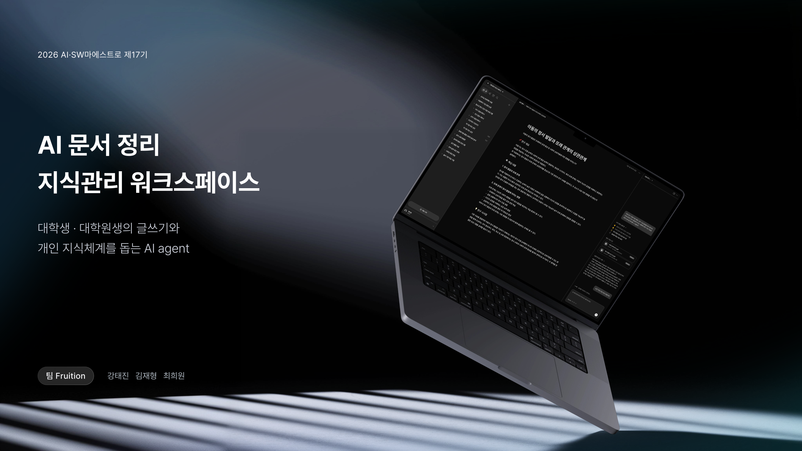
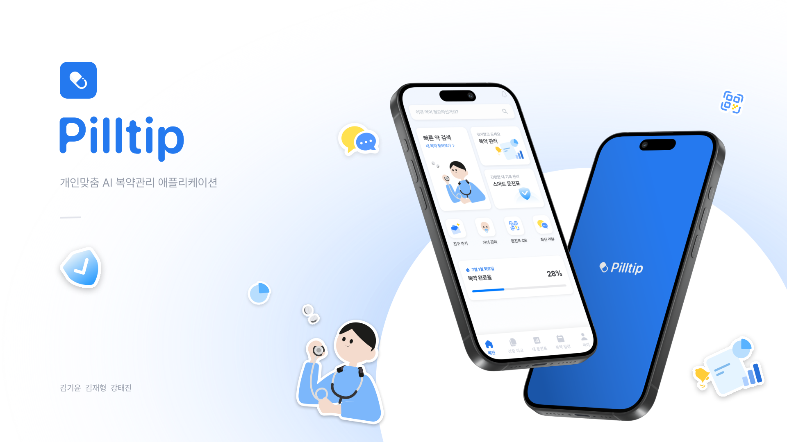

Fruition
올린 문서를 LLM이 Wiki로 정리하고, RAG로 원문 근거를 찾아 답하거나 자연어로 문서를 편집하는 AI 워크스페이스입니다. 지금은 AWS EKS에 배포해 QA를 진행하고 있습니다.
GitHub · AI 분리 저장소 ↗ABOUT ME
새 방법을 찾기 전에, 지금 무엇이 문제인지부터 파고듭니다.
RAG 근거 충족률을 66.25%에서 91.25%로, AI 문서 편집 품질을 82.5%에서 91.2%로 높이며, AI가 틀린 근거로 답하거나 사용자 문서를 함부로 바꾸지 않도록 평가·승인·복구 구조를 설계해 온 AI 애플리케이션 개발자입니다.
RAG 근거 충족률을 66.25%에서 91.25%로, AI 문서 편집 품질을 82.5%에서 91.2%로 높이며, AI가 틀린 근거로 답하거나 사용자 문서를 함부로 바꾸지 않도록 평가·승인·복구 구조를 설계해 온 AI 애플리케이션 개발자입니다. 문서를 지식으로 활용하는 AI 워크스페이스 Fruition에서 AI 기능 전체를 리드하고 있으며, 복약 위험 정보를 쉽게 전달하는 복약 서비스 Pilltip에서는 백엔드와 AI를 맡았습니다. 모니터 밖에서는 2년째 웨이트 트레이닝을 하고 있습니다.
SKILLS
LangChain · LangGraph · Spring AI · RAG · LLM Evaluation · Prompt Injection 대응
LangSmith · Elasticsearch · Weaviate
Java · Spring Boot · Python
MySQL · PostgreSQL · Redis · Kafka
Docker · Docker Compose · GitHub Actions
PROJECTS

올린 문서를 LLM이 Wiki로 정리하고, RAG로 원문 근거를 찾아 답하거나 자연어로 문서를 편집하는 AI 워크스페이스입니다. 지금은 AWS EKS에 배포해 QA를 진행하고 있습니다.
GitHub · AI 분리 저장소 ↗
커뮤니티의 TQQQ 200일선 매매법을 전략 명세로 구조화하고, 실시간 시세로 신호를 알리는 Android 앱으로 만들어 가족 2명이 사용했습니다. 원문이 주장한 성과는 미검증으로 표시하고, 45개 사이클을 재현해 승률이 19%가 아닌 40.00%임을 확인했습니다. 부분익절을 거래로 세면 승률이 72.73%로 오르는 것을 보여, 원문의 두 승률이 서로 다른 단위를 센다는 점까지 밝혔습니다. 전략 변형 5종도 같은 가정으로 백테스트해 CAGR·MDD를 구간별로 비교했습니다. 사용자 요청으로 QQQ 기반 두 번째 전략과 대기 자금의 SGOV·SPYM 운용을 추가했습니다.
앱은 배포하지 않았고, 계좌 정보는 기기 안에만 저장합니다.
GitHub 저장소 ↗Claude Code에 작업 계획과 기여 규칙을 주고 이슈 분석부터 PR까지 자동화해, HWP/HWPX 저장 오류 수정 등 PR 7건 병합·Contributor로 등재됐습니다.
GitHub 저장소 ↗ PR #1213 · 병합 ↗ PR #1351 · 제출 ↗ 크게 보기 ↗
크게 보기 ↗Backend 멘티 및 멘토. 멘티 12명 대상 6회 멘토링과 코드 리뷰. HTTP·Servlet·REST API·DB 기초를 보강하는 커리큘럼 개편에 참여했습니다.
APPTIVE 백엔드 멘토 공로상 · 2026.01.09
 크게 보기 ↗
크게 보기 ↗부산대학교 대표 전시팀으로 Pilltip 부스를 운영하며 방문자 100명 이상에게 시연하고 기술 질의응답을 진행했습니다. 받은 피드백 10건 중 대부분이 건강기능식품 확장 요청이었습니다.
평균 학점 4.12 / 4.5
평균 학점 4.2 / 4.5
한국산업인력공단